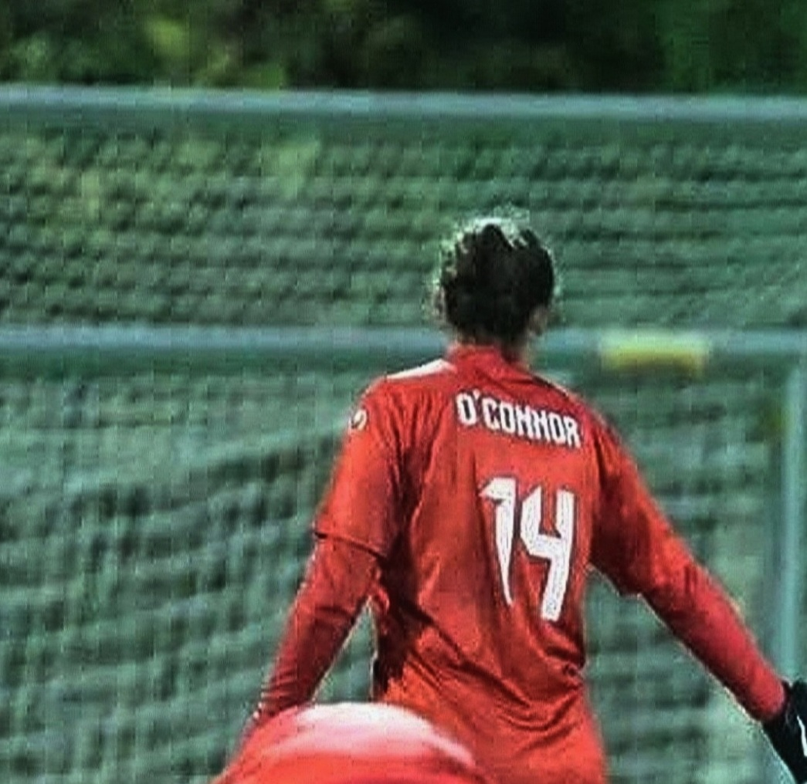

Name: Abigail O'Connor
Age: 23 years old
Nationalities: Luxembourgish and Irish
Phone number: in your dreams maybe
Luxembourgish
English
German
French
My favourite day one hobby is football. Since I was young I have always enjoyed watching and playing football. My favourite team to support is Arsenal FC, a team which I fell in love with through my dad's love for it. The rest of my family are unfortunately Liverpool supporters :// I have played on teams since I was 9 years old. Most recently I played for Mamer FC in Luxembourg. We got to the "Coupe des Dames" final last season but to our disappointment we failed to win the cup. This year I'm taking the season off even though I know I'll miss the beautiful game. Instead, I'm going to the gym consistently to build up for when I return in a year's time.
(pls ignore how pixelated this pic is)
Besides football, I love to read in my free time. My favourite books are all of the fictional variety and usually adhere to the fantasy genre. Asking me to pick my top 3 books is virtually impossible but I'll try my best.
It's worth noting that the Dance of Thieves series is a sequel (many readers don't know this).
Colour: Red
Animal: Dog
Food: Fajitas
Season: Summer
Movie: Mamma Mia
Song: Anchor by Novo Amor
Artist: One Direction
I like books and I like digital media😏
Funnily enough, I realised that I wanted to work in the book publishing industry when I was re-reading Book Lovers by Emily Henry. I haven't really gotten further than knowing I want to work in book publishing. I can't tell you which department specifically that I'd like to work in. I'm sort of going with the flow and seeing where my interests take me (hopefully to a stable, well paying job).
Since Book and Digital Media is all about the book, I deduced that this course would be the right fit. I also have a friend who took the course last year and recommended it to me, so that helps.